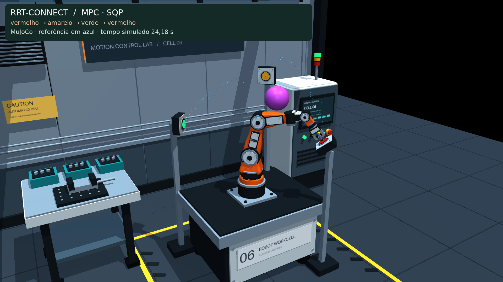

Duas árvores.
O RRT-Connect cresce a partir do botão atual e do próximo. Cada extensão é verificada no espaço das seis juntas. A conexão só é aceita quando todas as amostras da aresta são válidas.
PLANEJAMENTO + CONTROLE / 6 GRAUS DE LIBERDADE
Três botões. Um obstáculo.
O RRT encontra uma passagem. LQR, iLQR e MPC transformam a referência em torques no braço.

BANCADA INTERATIVA
Vídeo renderizado na cena industrial do MuJoCo a partir dos estados integrados. Pontos azuis: caminho da ponta de referência. Esfera roxa: obstáculo do planejador. Um segundo de apresentação e dois segundos finais; o movimento usa tempo simulado.
ANTES DO PRIMEIRO TORQUE
O RRT-Connect cresce a partir do botão atual e do próximo. Cada extensão é verificada no espaço das seis juntas. A conexão só é aceita quando todas as amostras da aresta são válidas.
O encurtamento remove vértices apenas quando a nova ligação também passa na verificação geométrica. O RRT não garante o caminho mais curto.
Polinômios de quinto grau percorrem as arestas, com velocidade e aceleração nulas nos vértices. O braço para nas quinas para não arredondar uma curva através do obstáculo.
| Trecho | Ligação direta | Nós explorados | Vértices · antes / depois | Comprimento articular | Tempo de planejamento |
|---|
Comprimento = soma das distâncias euclidianas entre configurações, em radianos. Não é a distância percorrida pela ponta em metros. As árvores usam a mesma semente em todas as comparações.
Referência Executado · Os marcadores acompanham o tempo do vídeo. Projeções podem sobrepor caminhos separados na terceira dimensão.
MEDIR, NÃO APENAS ASSISTIR
Tempo por comando inclui a montagem e solução do controlador naquele passo. Preparação da referência, Riccati do plano completo e otimização inicial do iLQR são medidos separadamente. O simulador espera o cálculo terminar; atrasos não são injetados na dinâmica.
| Método | Destinos | Erro RMS · ponta | Folga mín. | Preparação do controlador | Comando · mediana / p95 | Atrasos > 20 ms | Soluções sem convergência |
|---|
Uma execução por método nesta máquina, sem isolamento de CPU; não é um teste estatístico de desempenho. Com os limites atuais, a referência é viável e a saturação pode ser pequena. Métodos com o mesmo modelo e custo podem produzir trajetórias quase iguais.
TRANSPARÊNCIA & REPRODUÇÃO
Cápsulas aproximam os elos móveis. A esfera roxa, o pedestal, a bancada e o armário são obstáculos. Há verificações entre elos não vizinhos. Parafusos, cabos, suportes dos botões e contato de acionamento não entram nessa aproximação.
A margem planejada é de 25 mm. Arestas são amostradas a cada, no máximo, 0,025 rad por junta. A execução é verificada a cada 20 ms. Essa verificação discreta não certifica ausência de colisão contínua entre amostras, nem substitui um modelo CAD de colisão.
Os limites de juntas são limites de busca escolhidos para o experimento; o modelo original não impõe batentes físicos. A planta continua sem forças de contato. A execução é interrompida se o verificador detectar uma colisão.
A rota fornece posição, velocidade e aceleração. A dinâmica inversa do MuJoCo calcula os torques nominais. LQR e MPC usam modelos lineares ao longo da referência; o MPC considera os próximos 20 passos e limites de torque.
O iLQR reutiliza a dinâmica não linear e agora possui referência por instante. O plano completo cobre toda a rota; a versão em horizonte móvel reotimiza a cada medição. Nenhum controlador impõe restrições de colisão dentro de sua otimização: a verificação da execução é uma etapa separada.
Convergência do otimizador, chegada ao botão e folga geométrica são medidas diferentes. O relatório exibe as três. Euler/ZOH valem para os modelos lineares; o iLQR diferencia a transição integrada do MuJoCo.
Dentro de ~/mujoco, use:
Dados dos gráficos em JSON ↓
Caminho, parâmetros e semente ↓
Instruções completas ↗
Referências: RRT-Connect · OMPL e dinâmica inversa · MuJoCo.